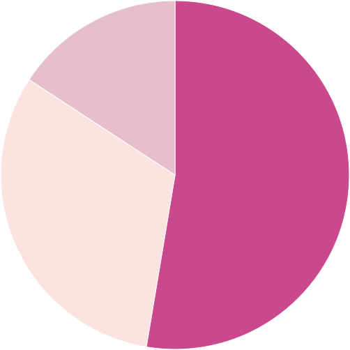

Перед Вами открывается картина рекламного рынка

? учитывается сезонность и планируемый месяц размещения.?
учитывается сезонность и планируемый месяц размещения.
Мы учли, что объем уличного трафика меняется в зависимости от месяца, дней недели и часовых интервалов внутри суток
Мы учли, что объем уличного трафика меняется в зависимости от месяца,
дней недели и часовых интервалов внутри суток
Мы учли, что объем уличного трафика меняется в зависимости от месяца, дней недели и часовых интервалов
внутри сутокМы учли, что объем уличного трафика меняется в зависимости от месяца, дней недели и часовых
интервалов внутри суток
Мы учли, что объем уличного трафика меняется в зависимости от месяца, дней недели и часовых интервалов
внутри суток